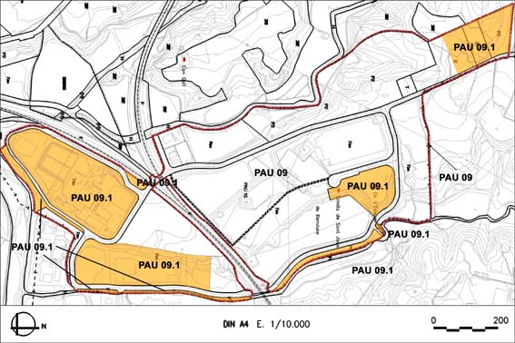

PAU 09 “Ca n’Esteper” (Polígon d’actuació urbanística PAU – 09) Inclou PAU 09.1

Objectiu: Desenvolupar l’ordenació urbanística vigent, acabar les obres d’urbanització i obtenir els terrenys qualificats de sistemes.
Règim del sòl: Sòl Urbà No Consolidat
| Superfície del polígon: Ordenació Sistemes urbanístics de cessió: Viari (V) Espais lliures (P1 i P2) Equipaments (E) Serveis tècnics(T) Zones edificables: Industrial aïllada, parcel.la petita amb alçada lliure (clau 7a4) |
637.525 m2s 62.335 m2s 105.569 m2s 45.454 m2s 2.704 m2s 421.463 m2s |
(St) Sostre total |
(Segons normes urbanístiques) |